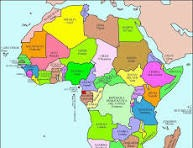
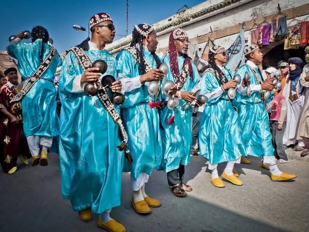
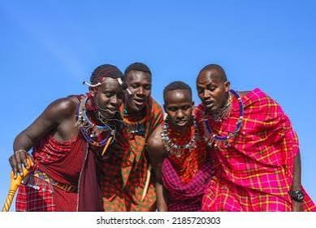

Fecha: 20 de octubre de 2026
Registro: Entrada de un diario de viaje
Querido diario:
Hoy escribo desde África, un continente inmenso y diverso. Mientras observo este continente, me doy cuenta de que no puedo resumirlo en una sola lengua, una sola costumbre ni un solo paisaje: aquí conviven muchísimos pueblos, historias y formas de vivir.
Dónde estoy
África está entre el océano Atlántico, al oeste, y el océano Índico, al este. Al norte la limita el mar Mediterráneo; al noreste, el mar Rojo y el canal de Suez la separan de Asia. El ecuador cruza la zona central del continente, así que África se extiende por los hemisferios norte y sur; también queda a ambos lados del meridiano de Greenwich, en los hemisferios oriental y occidental. Por eso tiene costas, islas y regiones muy distintas de norte a sur y de este a oeste.

Una diversidad de lenguas
Me pregunté cuál es el idioma que predomina. La respuesta más precisa es que no existe un único idioma predominante en todo el continente. UNESCO estima que en África se hablan entre 1,500 y 3,000 lenguas. Entre las lenguas de comunicación amplia está el kiswahili (suajili), especialmente importante en África oriental y reconocido como lengua oficial de la Unión Africana. También se hablan ampliamente árabe, inglés, francés, portugués y muchísimas lenguas africanas, según la región.
Países y tamaños
África suele contarse con 54 países soberanos reconocidos internacionalmente. La Unión Africana, en cambio, tiene 55 Estados miembros, pues incluye a la República Árabe Saharaui Democrática. El país más grande por superficie es Argelia, con unos 2,381,741 km². El más pequeño es Seychelles, un país insular del océano Índico, con unos 446 km²; en el territorio continental africano, el más pequeño es Gambia.
Climas y paisajes
No hay un solo clima africano. Gran parte del continente se encuentra en la zona tropical, por eso son extensos los climas tropicales, con sabanas y estaciones húmedas y secas. También hay climas áridos y desérticos —como el Sahara, el Namib y el Kalahari—, zonas ecuatoriales cálidas y lluviosas, regiones mediterráneas al norte y al sur, y climas de montaña más frescos.
Dos tradiciones de regiones distintas
Aprendí que no sería correcto decir que solo existen "dos tradiciones predominantes" para toda África; hay miles y varían entre comunidades. Aquí anoto dos ejemplos concretos:

1. La música Gnawa (Marruecos, norte de África)
Tradición de música, canto, prácticas fraternales y rituales que combina elementos espirituales y seculares, con raíces e influencias africanas, árabes-musulmanas y amaziges. Inscrita en la Lista de Patrimonio Cultural Inmaterial por la UNESCO en 2019.

2. Ritos de paso maasai (Kenia y Tanzania, África oriental)
Ceremonias comunitarias como Enkipata, Eunoto y Olng'esher, relacionadas con etapas de la vida y la transmisión cultural ancestral de las comunidades maasai.
Con curiosidad,
Yo